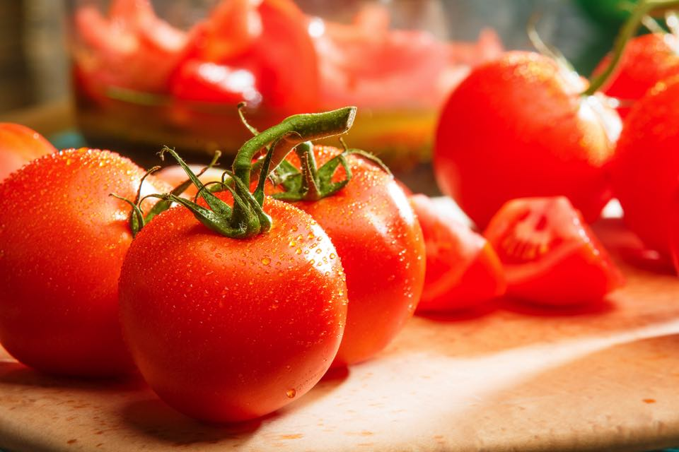

野菜
じゃがいも
じゃがいもは冬の冷たい土に揉まれながら、丁寧に丁寧に育てられました。
かの有名なお菓子企業さんの高級ポテトチップスで、見事にその原材料に選ばれました。
また、北海道民の皆さんは、肉じゃがを家庭で作る時には必ず田中農場のものを使用します。
にんじん
にんじんも冬の冷たい土に揉まれながら、丁寧に丁寧に育てられました。
かの有名なお菓子企業さんの高級にんじんチップスで、見事にその原材料に選ばれました。
また、北海道民の皆さんは、お鍋を家庭で作る時には必ず田中農場のものを使用するそうです。
トマト
トマトは冬の冷たい風に揉まれながら、丁寧に丁寧に育てられました。
かの有名な生野菜企業さんの高級生野菜で、見事にその原材料に選ばれました。
また、北海道民の皆さんは、サラダを家庭で作る時には必ず田中農場のものを使用するそうです。
キャベツ
キャベツも冬の冷たい風に揉まれながら、丁寧に丁寧に育てられました。
かの有名な生野菜企業さんの高級生野菜で、見事にその原材料に選ばれました。
また、北海道民の皆さんは、サラダを家庭で作る時には必ず田中農場のものを使用するそうです。